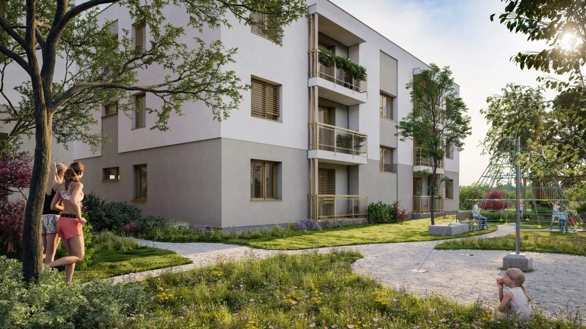

Moderné bývanie v obci Černík
Projekt pozostáva z dvoch dispozične rovnakých bytoviek umiestnených vedľa seba, v okolí ktorých je plánovaná zelená výsadba lúčnych kvetov a stromov.
- Dve dispozične rovnaké bytovky
- Zelená výsadba stromov a lúčnych kvetov v okolí
- Bytový dom má 3 nadzemné podlažia
Charakteristika bytov
Na výber sú moderné dvojizbové a trojizbové byty v obci Černík, navrhnuté s dôrazom na kvalitu, funkčnosť a estetiku. Každý byt je vyhotovený v prémiovom štandarde, ktorý zahŕňa laminátové podlahy v teplých odtieňoch, plastové okná s izolačnými sklami pre maximálnu energetickú úspornosť, modernú sanitu v kúpeľniach, kvalitný obklad a dlažbu v harmonických farbách, ako aj bezpečnostné dvere pre váš pokoj a bezpečie. Interiér je navrhnutý tak, aby poskytoval dostatok prirodzeného svetla a priestoru pre pohodlné bývanie. Súčasťou každého bytu je praktická loggia, ideálna na relax alebo pestovanie rastlín, a vlastné parkovacie miesto hneď vedľa bytového domu, ktoré je zahrnuté v cene.
Charakteristika bytového domu
| Stav | Novostavba – všetky byty sú moderné, svetlé, použité sú kvalitné materiály. |
|---|---|
| Typy bytov | dvojizbové a trojizbové |
| Vybavenie | štandard – plávajúce podlahy, plastové okná s izolačnými sklami, sanita, obklad, dlažba, dvere. |
| Parkovanie | vlastné parkovacie miesta pre obyvateľov domu v cene bytu. |
| Energie | nízke mesačné náklady na bývanie vďaka modernej izolácii, vykurovaniu tepelným čerpadlom a solárnym kolektorom. |

Výhody
Nízke mesačné náklady
Vďaka moderným technológiám, ako sú tepelné čerpadlá a solárne kolektory, sú vaše mesačné náklady príjemne nízke.
Moderné vybavenie
Byt v prémiovom štandarde – laminátové podlahy, plastové okná s izolačnými sklami a bezpečnostné dvere.
Komunitný priestor
Detské ihrisko a spoločný priestor pre relax vytvárajú ideálne miesto pre rodiny a susedské vzťahy.
Parkovanie v cene
Každý byt má vlastné parkovacie miesto zahrnuté v cene – žiadne starosti s parkovaním.
Harmonogram výstavby
- Jar 2025Zahájenie výstavby
- Jar 2026Ukončenie výstavby
Lokalita
Černík je malá obec so srdcom v tichej lokalite, ponúkajúcej pokoj a súčasne rýchly prístup do okolitých miest.
Černík, umiestnený v severnej časti okresu Nové Zámky, patrí do Nitrianskeho kraja. Obec poskytuje výhľad na ľavý breh rieky Nitry, vinohradnícku oblasť a lesy na rozlohe až 315 ha, pričom sa rýchlo rozvíja aj miestny priemysel. S rozlohou poľnohospodárskej pôdy viac ako 900 ha a celkovou rozlohou obce 1 339 ha predstavuje malý kúsok krajiny plný príležitostí.
Kataster obce obsahuje rybník a časť štrkoviska, obľúbené miesta rybárov a rodín na relaxačné prechádzky. Ideálne sú nielen na stretávanie a oddych, ale aj na tvorbu spoločných spomienok. Nezabudnime ani na blízkosť Podhájskej, ktorá je len kúsok od obce a ponúka ďalšie možnosti rekreačného vyžitia.
Vďaka skvelej polohe obce Černík je kúpa nehnuteľnosti zaujímavá nielen ako miesto bývania, ale aj ako perspektívna investičná príležitosť.
- 11 kmŠurany
- 17 kmPodhájska
- 18 kmVráble
- 23 kmNitra
Susedné obce: Mojzesovo, Vinodol, Komjatice, Maňa, Kmeťovo, Michal nad Žitavou.
Vizualizácia vstupu do bytovky a lúky s kvetmi Vizualizácia parkovania pri bytovke Vizualizácia dvora so zeleňou Vizualizácia dvora medzi bytovkami zo vzduchu
Prečo Černík
- Nízke mesačné náklady
- Vďaka moderným izolačným technológiám, vykurovaniu tepelným čerpadlom, ohrevu vody tepelným čerpadlom a solárnym kolektorom sú mesačné náklady na bývanie príjemne nízke.
- Ideálne okolie na aktivity
- Okolie ponúka príjemné prostredie na prechádzky a cykloturistiku.
- Komplexné vybavenie
- Obchody, materská škola, základná škola Mojzesovo, pošta, reštaurácia a všeobecný lekár sú v pohodlnom dosahu.
- Služby obce
- Obec disponuje najmodernejším zberovým dvorom s plným spektrom služieb pre občanov a poskytuje aj širokú škálu služieb na objednávku.
- Kultúrne podujatia
- Obec pravidelne organizuje rôzne kultúrno-spoločenské slávnosti a podujatia.
- Bezpečná komunita
- Obyvatelia sa môžu tešiť na bezpečné a priateľské prostredie, kde sa každý cíti ako doma.